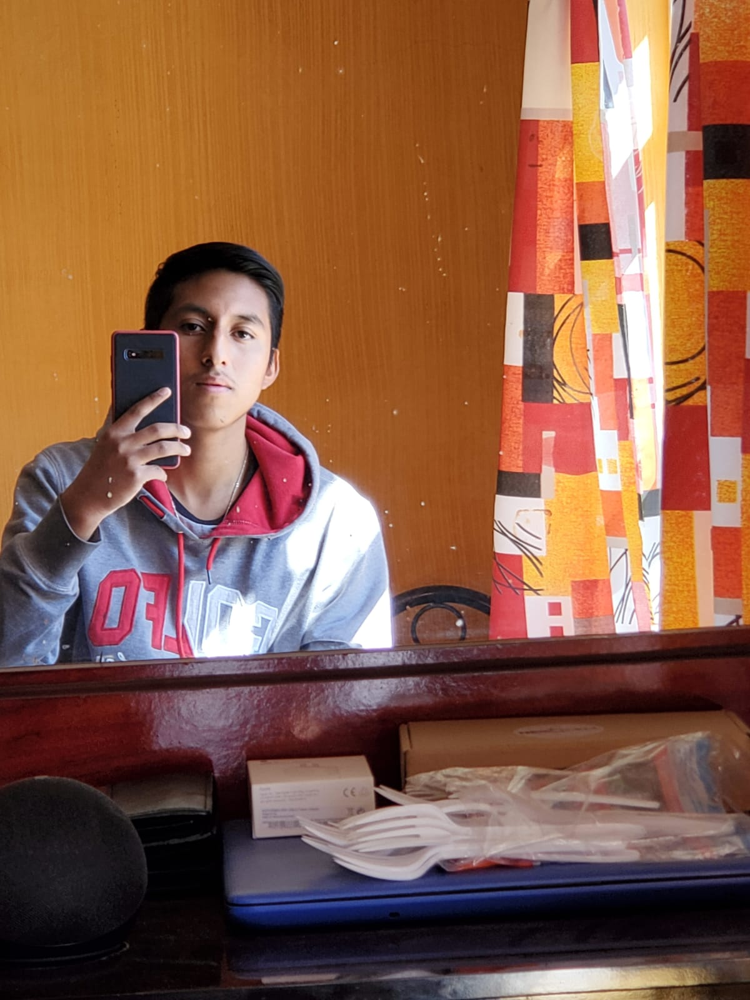

En ese cuatrimestre lo cursé en la UTEQ. Lo que aprendí fue la metodología de programación, iniciando en PSeInt y luego en Python. En esta parte, aprendí toda la lógica y los tipos de datos que se utilizan para programar, al igual que las compuertas lógicas. Por ejemplo, cuando en AND un valor es verdadero y el otro es falso, el resultado es falso. Esto me ayudó mucho en la programación. También vi fundamentos de redes, donde aprendí cómo configurar switches y routers, desde lo básico como entrar a configurar y asignar IPs con VLSM para evitar el desperdicio de las IPs. Además, aprendí cómo conectar los dispositivos a los puertos del switch y cómo ponchar los cables de red.
Sobre Mí

Hola, soy Alan. Actualmente estoy estudiando en la Universidad Tecnológica de San Juan del Río la carrera de Desarrollo de Software Multiplataforma cursando el 4to cuatrimestre. Me parece una muy buena carrera la que escogí, ya que me llamó la atención las tecnologías. Además, me siento muy bien en la universidad, me gusta su infraestructura y todas las áreas verdes que tienen. En cuanto a los maestros, son muy buenos, todos tienen buenos conocimientos y saben enseñarlo. En mis tiempos libres me gusta tocar la guitarra y jugar básquetbol.
1er Cuatrimestre
2do Cuatrimestre
En este cuatrimestre, que también lo cursé en la UTEQ, aprendí programación orientada a objetos, algo más avanzado como herencia y polimorfismo, de cómo se heredan las clases para acceder a ciertos datos. También aprendí a hacer interfaces gráficas en Java con conexión a base de datos, realizando un programa que tenía que hacer un CRUD desde la programación. Además, vi diseño gráfico, donde aprendí la teoría del color, texturas, así como el significado de cada color y cómo impacta visualmente al vender proyectos. En interconexiones de redes, aprendí a configurar servicios como email y TFTP, configurar rutas estáticas y dinámicas con RIPv2, e implementar VLANS, VLSM y switches de capa 3 en un proyecto. En bases de datos SQL, aprendí a hacer mapas de entidad-relación, normalización de tablas, creación de bases de datos y consultas simples y multitablas. Igual aprendi a hacer requerimientos de un proyecto y las metodologias agiles en el desarrolo de software
3er Cuatrimestre
Aprendí a hacer sitios web utilizando JavaScript, HTML, CSS, ya aprendiendo tanto frontend como backend con Node.js, creando sitios con bases de datos en la nube y hosteo de sitios web. En bases de datos, aprendí a hacer consultas avanzadas con múltiples tablas, procedimientos almacenados, triggers, transacciones y seguridad en las bases de datos. También aprendí sobre el sistema operativo Linux, usando comandos para crear carpetas o archivos de texto, gestionar permisos y ejecutar máquinas virtuales en una computadora.